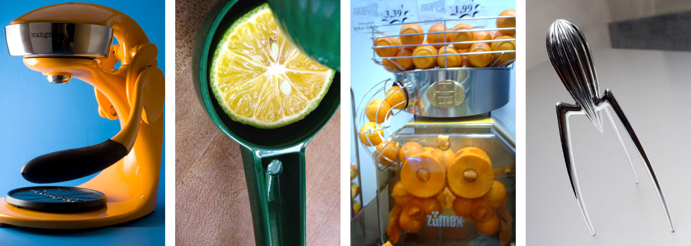

Scaling Up: Connecting Patient Experience with Strategy
How can design thinking and methods help organizations better understand their challenges and transform from the ground up?
Themes: Patient Experience, Service and Organization Design, Design Research, Vision and Planning Goals: Our team was engaged to examine patient experience within an out-patient facility and explore opportunities for the facility to become a “model for the future of healthcare delivery.” Research informed visual models, and models aided design concepts that sought to alleviate pain-points in the experience for patients and families. This set a foundation for organizational transformation.
Broad Scope and Unclear Problems
Bethel Park, Pennsylvania, eight miles south of Pittsburgh, is a middle class suburb with an aging population. UPMC South Hills, a facility built in the 1990s, and had grown to include over a dozen outpatient offices like surgery, cardiology, and primary care. More broadly, UPMC’s network was expanding at the time, opening and acquiring clinics and hospitals across the region.
We began initial stakeholder interviews and toured the three story, 120,000 square foot facility. We were also briefed on prior research on patient satisfaction that had been conducted but never acted upon. The facility tour covered the building’s waiting areas, central cafe, and back-offices. Natural light entered the core of the build- ing through a central atrium. Our team photographed the interior and exterior physical plant, existing services, pathways, wayfinding systems, waiting areas, surgery and recovery rooms, staff offices, document storage, technology and tools, accessibility features, and more. Complete documentation helps design teams create accurate models and flow charts and keep them mentally “in place” while working in their own space.
Documentation began even before the initial walk- through: our team struggled to find UPMC South Hills because the exterior signage was blocked by trees and the facility itself poorly marked and obscured from the main road. When we arrived and looked for the administrator’s office, the directory had well over a hundred listed locations, none of which included the admin’s office. Overhead signage also proved unhelpful.
While we branched out and conducted exploratory research in as many facilities as possible, eventually choosing the surgery center as an opportunity with the highest number of patient engagements on an annual basis.
We met Barry Hume and his wife Deborah. Barry was having knee replacement surgery and was referred to UPMC South Hills because of its proximity to their home. The Humes scheduled surgery day six weeks ahead of time and had two phone discussions with the nursing staff and received one final reminder and check- in phone call the day before surgery. They arrived at 8 AM, their first time at UPMC South Hills. To expedite patient arrival and to make them feel more welcome, the nursing staff waits outside a dedicated entrance for the surgery center and warmly refer to it as the “celebrity entrance.” Deborah left Barry with the nurse and parked their car.
Our team shadowed Barry and Deborah throughout the process. His surgery was successful and he spent the rest of the afternoon in recovery before being discharged at 5 PM. Both said they were pleased with the experience. This was echoed by many patients and family members: the experience is great. The staff makes patients feel as comfortable as possible; they check in on them in the days that follow; they express genuine care and concern for everyone’s wellbeing. These findings were also reflective in the internal surveys that our team inherited which showed an overwhelming levels of satisfaction. Three days later, the Humes brought a birthday cake for the nurse who took care of them.

Research Insights and Problem Framing
Our team conducted a broad spectrum of quantitative and qualitative research over four weeks: patient satisfaction surveys, check-in desk satisfaction surveys, staff surveys, mapping information flows, technology audits, unstructured interviews with patients, families, and staff, patient and staff shadowing, patient diaries, photo documentation, and more during the generative design phase like co-creation workshops.
These findings were mapped onto stakeholder charts, journey maps, blueprints, OMI (observation-meaning-implication) charts, data graphs, and narratives that captured patterns.
Had our research at UPMC been solely analytical, only a partial picture would have emerged — patients would have been seen as broadly satisfied. Instead, by employing and synthesizing a variety of methods, deeper organizational issues were exposed:
- Siloed offices with few staff members knowing the breadth of offerings at UPMC South Hills.
- Patients and staff alike lacked an understanding of the breath of services offered by the facility: referrals were made to patients outside of South Hills without realizing their needs could be met down the hall.
- A siloed organization with few staff members at South Hills understanding of corporate’s direction.
- At South Hills, a clean, bright space but an atmosphere that evoked a dead mall.
- Navigation and wayfinding challenges, posing significant issues for first time and elderly visitors.
- The centrally-located cafe and sitting area was closed most of the time and the space felt too clinical for what it was trying to be.
- Long periods of boredom for family members; little for them to engage with in waiting areas and a dreary cafe with sporadic hours.
- Information flow between offices was hindered by old tools and technology.
- Patients were bounced around: missing or erroneous information and bad wayfinding led them to the wrong offices.
- The facility’s digital footprint lacked a clear listing of services offered, hours, and contact information. No brand cohesion existed across UPMC digital properties.
- Finding UPMC South Hills proved challenging for patients and families.
- UPMC South Hills had little name recognition in Bethel Park or surrounding towns. Our survey showed that the majority of respondents did not know the facility existed or that outpatient surgery was an option in their community.
- A plurality of respondents confused UPMC South Hills for St. Clair Hospital, a competitor across the street.
Prototyping Iterative Improvements
Some of the issues we identified had fairly direct vectors between problem and solution. We developed low-fidelity concepts, estimated cost/benefit, and ran short experiments by changing the physical space: making a cozier cafe space, improvements in wayfinding, adding comforts to the waiting rooms, added calming music to ad hoc “breather spaces,” designed simpler forms, and more.
“Understanding ‘healthcare of the future’ begins with understanding people just as much as it does technology and advancements in medicine. For us, it meant leaving South Hills and integrating with the community…”
Steve Jobs and Henry Ford are both credited with saying that users don’t know what they want — that they can only talk about iterative changes, not transformative ones. While it’s true that future visioning does not come naturally for most people, it becomes much easier when participants are prompted with artifacts to generate ideas and offer feedback.
As we prototyped the cafe, waiting rooms, entrances, hallways, and processes, we gathered feedback through diaries, forms, and co-creation tools like sticker blueprints and drawings. It helped our team get a quick sense of what resonated and was flexible enough for instant adjustments. Methods like these also collected new ideas from the participants themselves. It was efficient, immediate, and cost-effective.
A Pivot Towards the Future
Our team was invited to meet with a corporate steering committee looking to improve experiences at their mid-size outpatient centers. Aside from addressing the poor wayfinding, brand awareness, and digital footprint, they asked us to scale up and envision how South Hills could become a “satellite facility of the future, serving as a model to others nationwide.”
It was an opportunity to reach ahead and not one that could be understood through linear, problem-solution thinking. Nor was the future going to be defined by moving furniture around. Prototyping new physical space has value in very direct ways to patients, families, and staff, but upstream work leads to more cohesive design with broader impact and cost efficiencies. The complexity is greater but so is the impact and value.
We conducted another competitive analysis to understand innovative approaches to healthcare delivery around the world. At the time, “design thinking” was a relatively new term to business, and outside of Mayo Clinic we were the only ones explicitly practicing service and organization design. And we knew that whatever we learned from competition would merely inform us but not help us design models for Western Pennsylvania. Successful design solutions are successful in part because of contextuality. An idea that resonates in Rochester, Minnesota is never guaranteed to work in Bethel Park, Pennsylvania or Downtown Pittsburgh. Factors that influence the success of a design outcome: nuanced market demands, community and culture, workforce culture, staffing models, and more. Giving all solutions the broader organizational support would be crucial to a impactful change
Understanding “healthcare of the future” begins with understanding people just as much as it does technology and advancements in medicine. For us, it meant leaving South Hills and integrating with the community, starting at a nearby mall on a Tuesday morning. The research was completely informal, unstructured, and randomly selected. We bought coffee for mall-walkers, talked with employees, and recorded their stories. No data came from it aside from the revelation that asking “what does the ‘future of healthcare’ look like to you” yields almost no tangible insights. Like product design, unless people are guided in specific ways to think about the future, they will struggle to articulate it.
Most research methods are focused on the cusp of iterative change; far-futuring activities yield tropes of science fiction. We needed to understand latent needs but thirty years out. To complicate the research, healthcare is sensitive for people. Each participant brings their own experiences and openness may be hard for many. And lastly, thinking thirty years into the future was an entirely unreasonable proposition for the aging population of Bethel Park.
We employed a remapping technique to understand the values of individuals and community ethos: prompted with a set of four image cards per question, users were asked “if healthcare in the future were” one of the four juicers, one of the four magazines, one of the four vacation spots, one of the four cars, “which one would it be and why?” The choices they made were irrelevant to us; what mattered was their justification: “I like the green juicer because it’s personal. It’s one-at-a-time. With the industrial juicer, I would feel like just another orange.”
“I like the green juicer because it’s personal. It’s one-at-a-time. With the industrial juicer, I would feel like just another orange.”  Between juicers, vacations, and media, we collected hundreds of data points that spoke to desires of comfort, accessibility, brightness, efficiency, happiness, peace, relaxation, individuality, immediacy, and simplicity. We ran a linguistic analysis and the results helped us construct a vertical map defined by the community itself.
Our vertical maps connect broad, aspirational direction, with principles and goals that can be roadmapped, and tactical projects that can be measured. They help align complex organizations that seek transformation on many levels. They help build a culture of change where all participants have clarity on their role and the shared mission.
The vertical map stemmed from the lack of vision for South Hills and UPMC’s many other satellite facilities. While we could continue to prototype valuable ground-level changes to influence patient experience, they needed to be part of a broader plan, a strategy, and a vision — one that balanced stakeholder perspectives and constraints, patient-centered values, and community ethos.
Every organization creates mission, vision, and values statements. Sometimes those are loosely tied to strategic priorities. Rarely are those aspirational narratives tied to action plans, and if they are they remain high level. While they can be motivational for members of the organization, they are often times too distant.
This framework articulates the vision statement with clear principles, and goals share and ladder up to those principles. Goals and associated projects can be mapped to budgets, timelines, teams and business units, KPIs and OKRs. Operationalizing a vertical map is like enacting a budget plan — but the vertical map is a structured and action-oriented narrative instead of numbers.
With other clients, our vertical maps have adapted to unique organizational structures and needs. Multiple visions, for instance, all under a company-wide vision; strategic plans inserted between goals and principles; workstreams at the bottom with teams in place to execute. Like all good design, it responds to context, flexing to the realities. It creates order from the messiness, and legibility and clarity amidst the layers of complexity.
At UPMC, the vertical map was delivered as part of a larger comprehensive strategy and workbook that detailed project possibilities, proposed strategies, cost-benefit, research insights, and a high-level roadmap for action. Success would depend on empowering people across the organization with tools, fostering the work and iterating to make sure solutions have resilience.
Design is a values-driven and action-oriented profession. We sought to create a healthier organization and healthier community through the patient’s eyes and used these insights to inform strategy at the organization’s highest levels and longest horizon.
Summary of Process
Frame: A thorough review of existing research and initaitives; familiarization with connections and roles of business units; cross-stakeholder workshops defined the problem space.
Research: Extensive ethnographic research was turned into actionable models: blueprints, process maps, data graphs, narratives and more.
Ideate: We created new futures through collaborative design methods and turned those methods into concepts that could be tested and iterated upon.
Build: The vertical map was developed with articulated plans for actionable projects. We validated and roadmapped the projects.
Final Document